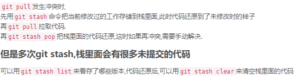

<!DOCTYPE html>


  <html class="light page-post">


<head><meta name="generator" content="Hexo 3.8.0">
  <meta charset="utf-8">
  
  <title>git笔记 | 胡思旺</title>

  <meta name="viewport" content="width=device-width, initial-scale=1, maximum-scale=1">

  
    <meta name="keywords" content="全栈,微服务,Java,Netty,Vue,机器学习,Python">
  

  <meta name="description" content="Git笔记  git – 分布式版本控制工具     安装git  Linux上可以直接执行sudo apt-get install git   windows上下载安装&amp;nbsp;&amp;nbsp;git地址     配置git  git是分布式版本控制系统，每个机器都必须规定标识：你的名字和Email地址    git config –global user.name “Your Name”">
<meta property="og:type" content="article">
<meta property="og:title" content="git笔记">
<meta property="og:url" content="http://yoursite.com/2018/12/27/git笔记/index.html">
<meta property="og:site_name" content="胡思旺">
<meta property="og:description" content="Git笔记  git – 分布式版本控制工具     安装git  Linux上可以直接执行sudo apt-get install git   windows上下载安装&amp;nbsp;&amp;nbsp;git地址     配置git  git是分布式版本控制系统，每个机器都必须规定标识：你的名字和Email地址    git config –global user.name “Your Name”">
<meta property="og:locale" content="default">
<meta property="og:image" content="http://yoursite.com/2018/12/27/git笔记/git111.PNG">
<meta property="og:updated_time" content="2018-12-27T09:56:30.823Z">
<meta name="twitter:card" content="summary">
<meta name="twitter:title" content="git笔记">
<meta name="twitter:description" content="Git笔记  git – 分布式版本控制工具     安装git  Linux上可以直接执行sudo apt-get install git   windows上下载安装&amp;nbsp;&amp;nbsp;git地址     配置git  git是分布式版本控制系统，每个机器都必须规定标识：你的名字和Email地址    git config –global user.name “Your Name”">
<meta name="twitter:image" content="http://yoursite.com/2018/12/27/git笔记/git111.PNG">

  

  
    <link rel="icon" href="/favicon.ico">
  

  <link href="/css/styles.css?v=c114cben" rel="stylesheet">


  
    <link rel="stylesheet" href="/css/personal-style.css">
  

  

  
  <script type="text/javascript">
    var _hmt = _hmt || [];
    (function() {
      var hm = document.createElement("script");
      hm.src = "//hm.baidu.com/hm.js?57e94d016e201fba3603a8a2b0263af0";
      var s = document.getElementsByTagName("script")[0];
      s.parentNode.insertBefore(hm, s);
    })();
  </script>


  
  <script type="text/javascript">
	(function(){
	    var bp = document.createElement('script');
	    var curProtocol = window.location.protocol.split(':')[0];
	    if (curProtocol === 'https') {
	        bp.src = 'https://zz.bdstatic.com/linksubmit/push.js';        
	    }
	    else {
	        bp.src = 'http://push.zhanzhang.baidu.com/push.js';
	    }
	    var s = document.getElementsByTagName("script")[0];
	    s.parentNode.insertBefore(bp, s);
	})();
  </script>


  

</head>
</html>
<body>


  
    <span id="toolbox-mobile" class="toolbox-mobile">盒子</span>
  

  <div class="post-header CENTER">
   
  <div class="toolbox">
    <a class="toolbox-entry" href="/">
      <span class="toolbox-entry-text">盒子</span>
      <i class="icon-angle-down"></i>
      <i class="icon-home"></i>
    </a>
    <ul class="list-toolbox">
      
        <li class="item-toolbox">
          <a class="CIRCLE" href="/archives/" rel="noopener noreferrer" target="_self">
            博客
          </a>
        </li>
      
        <li class="item-toolbox">
          <a class="CIRCLE" href="/project/" rel="noopener noreferrer" target="_self">
            项目
          </a>
        </li>
      
        <li class="item-toolbox">
          <a class="CIRCLE" href="/category/" rel="noopener noreferrer" target="_self">
            分类
          </a>
        </li>
      
        <li class="item-toolbox">
          <a class="CIRCLE" href="/search/" rel="noopener noreferrer" target="_self">
            搜索
          </a>
        </li>
      
        <li class="item-toolbox">
          <a class="CIRCLE" href="/about/" rel="noopener noreferrer" target="_self">
            联系
          </a>
        </li>
      
    </ul>
  </div>


</div>


  <div id="toc" class="toc-article">
    <strong class="toc-title">文章目录</strong>
    <ol class="toc"><li class="toc-item toc-level-1"><a class="toc-link" href="#Git笔记"><span class="toc-text">Git笔记</span></a><ol class="toc-child"><li class="toc-item toc-level-2"><a class="toc-link" href="#安装git"><span class="toc-text">安装git</span></a></li><li class="toc-item toc-level-2"><a class="toc-link" href="#配置git"><span class="toc-text">配置git</span></a></li><li class="toc-item toc-level-2"><a class="toc-link" href="#基本使用"><span class="toc-text">基本使用</span></a></li><li class="toc-item toc-level-2"><a class="toc-link" href="#版本控制"><span class="toc-text">版本控制</span></a></li><li class="toc-item toc-level-2"><a class="toc-link" href="#分支操作"><span class="toc-text">分支操作</span></a></li><li class="toc-item toc-level-2"><a class="toc-link" href="#标签操作"><span class="toc-text">标签操作</span></a></li></ol></li></ol>
  </div>


<div class="content content-post CENTER">
   <article id="post-git笔记" class="article article-type-post" itemprop="blogPost">
  <header class="article-header">
    <h1 class="post-title">git笔记</h1>

    <div class="article-meta">
      <span>
        <i class="icon-calendar"></i>
        <span>2018.12.27</span>
      </span>

      
        <span class="article-author">
          <i class="icon-user"></i>
          <span>siwang.hu</span>
        </span>
      

      
  <span class="article-category">
    <i class="icon-list"></i>
    <a class="article-category-link" href="/categories/开发工具/">开发工具</a>
  </span>


      
        <span>
          <i class="icon-comment"></i>
          <a href="http://www.github.com/siwanghu/2018/12/27/git笔记/#disqus_thread"></a>
        </span>
      

      
      
    </div>
  </header>

  <div class="article-content">
    
      <h1 id="Git笔记"><a href="#Git笔记" class="headerlink" title="Git笔记"></a>Git笔记</h1><blockquote>
<ul>
<li>git – 分布式版本控制工具  </li>
</ul>
</blockquote>
<h2 id="安装git"><a href="#安装git" class="headerlink" title="安装git"></a>安装git</h2><blockquote>
<ul>
<li>Linux上可以直接执行<strong>sudo apt-get install git</strong>  </li>
<li>windows上下载安装&nbsp;&nbsp;<a href="https://git-scm.com/downloads" target="_blank" rel="noopener">git地址</a>  </li>
</ul>
</blockquote>
<h2 id="配置git"><a href="#配置git" class="headerlink" title="配置git"></a>配置git</h2><blockquote>
<ul>
<li><p>git是分布式版本控制系统，每个机器都必须规定标识：你的名字和Email地址  </p>
</li>
<li><p><strong>git config –global user.name “Your Name”</strong>  </p>
</li>
<li><p><strong>git config –global user.email “<a href="mailto:email@example.com" target="_blank" rel="noopener">email@example.com</a>“</strong>  </p>
</li>
<li><p><strong>ssh-keygen -t rsa -C “<a href="mailto:youremail@example.com" target="_blank" rel="noopener">youremail@example.com</a>“</strong> 配置github公钥  </p>
</li>
<li><p>在~/下生成.ssh文件夹，打开id_rsa.pub，复制里面的key。到github 上，进入 Account =&gt; Settings，配置公钥  </p>
</li>
</ul>
</blockquote>
<h2 id="基本使用"><a href="#基本使用" class="headerlink" title="基本使用"></a>基本使用</h2><blockquote>
<p><strong>git clone 仓库地址</strong>&nbsp;&nbsp;&nbsp;&nbsp;克隆一个远程git仓库到本地  </p>
<p><strong>git pull</strong>&nbsp;&nbsp;&nbsp;&nbsp;拉取远程仓库最新的代码</p>
<p><strong>git add -A</strong> &nbsp;&nbsp;&nbsp;&nbsp;将所有文件的改动添加到提交仓库中  </p>
<p><strong>git add filename</strong> &nbsp;&nbsp;&nbsp;&nbsp;将指定文件名的文件改动添加到提交仓库中  </p>
<p><strong>git commit -m “message”</strong> &nbsp;&nbsp;&nbsp;&nbsp;提交所有改动，message为改动的附加信息  </p>
<p><strong>git push</strong> &nbsp;&nbsp;&nbsp;&nbsp;将本地的提交推送到远程仓库  </p>
</blockquote>
<h2 id="版本控制"><a href="#版本控制" class="headerlink" title="版本控制"></a>版本控制</h2><blockquote>
<p><strong>git log</strong> &nbsp;&nbsp;&nbsp;&nbsp;查看当前分支commit提交的版本  </p>
<p><strong>git reset –hard e377f60e28c8b84158</strong> 将版本回滚到指定版本(e377f60e28c8b84158时git log打印的每个版本对应的版本号)  </p>
<p><strong>git push -f</strong> 强制对当前分支版本的回滚推送到远程仓库(非常危险的操作，会覆盖远程仓库的分支的以前修改，谨慎使用)  </p>
<ul>
<li><p>如果远程主机的版本比本地版本更新，推送时Git会报错，要求先在本地做git pull合并差异，然后再推送到远程主机  </p>
</li>
<li><p><strong>git push -f</strong>可以强制推送，但会覆盖远程已经修改的代码，这个命令与团队中人员确定沟通，除非必要，否则不可轻易使用  </p>
</li>
<li><p>使用git pull拉取远程代码发生冲突时，需要自己手动解决冲突，可以先将自己的冲突文件重命令，然后git pull拉取远程代码，将自己的修改手动合并到新代码中，删除重命名的文件  </p>
</li>
</ul>
<p>  </p>
</blockquote>
<h2 id="分支操作"><a href="#分支操作" class="headerlink" title="分支操作"></a>分支操作</h2><blockquote>
<p><strong>git branch</strong> &nbsp;&nbsp;&nbsp;&nbsp;查看分支（可以列举本地所有的分支，以及标注出自己当前所属的分支）    </p>
<p><strong>git branch -a</strong> &nbsp;&nbsp;&nbsp;&nbsp;查看远程仓库所拥有的分支</p>
<p><strong>git branch testname</strong> &nbsp;&nbsp;&nbsp;&nbsp;创建一个新分支testname  </p>
<p><strong>git checkout testname</strong>&nbsp;&nbsp;&nbsp;&nbsp;分支切换，将本地切换到testname分支  </p>
<p><strong>git branch -d testname</strong>  删除分支testname  </p>
<p><strong>git push –set-upstream origin testname</strong> 当你在本地仓库建立分支，远程并没有对应的分支时，需要采用这个命令第一次推送文件  </p>
<p><strong>git merge testname</strong> 合并分支testname  </p>
</blockquote>
<h2 id="标签操作"><a href="#标签操作" class="headerlink" title="标签操作"></a>标签操作</h2><blockquote>
<ul>
<li><p>git对每个分支的的每次commit提交都会有一个唯一的Id表示，例如：e377f60e28c8b84158这种样子  </p>
</li>
<li><p>这种Id不容易记忆,可以对每次提交打一个标签来命名，例如：V1.0</p>
</li>
<li><p>默认标签是打在当前分支最新提交的commit上  </p>
</li>
</ul>
<p><strong>git tag</strong> &nbsp;&nbsp;&nbsp;&nbsp;查看所有标签  </p>
<p><strong>git tag v1.0</strong> &nbsp;&nbsp;&nbsp;&nbsp;在最新commit提交上打上v1.0的标签</p>
</blockquote>

    
  </div>

</article>


   
  <div class="text-center donation">
    <div class="inner-donation">
      <span class="btn-donation">支持一下</span>
      <div class="donation-body">
        <div class="tip text-center">扫一扫，支持胡思旺</div>
        <ul>
        
          <li class="item">
            
              <span>微信扫一扫</span>
            
            
          </li>
        
          <li class="item">
            
              <span>支付宝扫一扫</span>
            
            
          </li>
        
        </ul>
      </div>
    </div>
  </div>


   
  <div class="box-prev-next clearfix">
    <a class="show pull-left" href="/2018/12/26/负载均衡笔记/">
        <i class="icon icon-angle-left"></i>
    </a>
    <a class="hide pull-right" href="/">
        <i class="icon icon-angle-right"></i>
    </a>
  </div>


   
      <div class="git"></div>
   
</div>


  <a id="backTop" class="back-top">
    <i class="icon-angle-up"></i>
  </a>


  <div class="modal" id="modal">
  <span id="cover" class="cover hide"></span>
  <div id="modal-dialog" class="modal-dialog hide-dialog">
    <div class="modal-header">
      <span id="close" class="btn-close">关闭</span>
    </div>
    <hr>
    <div class="modal-body">
      <ul class="list-toolbox">
        
          <li class="item-toolbox">
            <a class="CIRCLE" href="/archives/" rel="noopener noreferrer" target="_self">
              博客
            </a>
          </li>
        
          <li class="item-toolbox">
            <a class="CIRCLE" href="/project/" rel="noopener noreferrer" target="_self">
              项目
            </a>
          </li>
        
          <li class="item-toolbox">
            <a class="CIRCLE" href="/category/" rel="noopener noreferrer" target="_self">
              分类
            </a>
          </li>
        
          <li class="item-toolbox">
            <a class="CIRCLE" href="/search/" rel="noopener noreferrer" target="_self">
              搜索
            </a>
          </li>
        
          <li class="item-toolbox">
            <a class="CIRCLE" href="/about/" rel="noopener noreferrer" target="_self">
              联系
            </a>
          </li>
        
      </ul>

    </div>
  </div>
</div>


  
      <div class="fexo-comments comments-post">
    
  <section class="disqus-comments">
    <div id="disqus_thread">
      <noscript>Please enable JavaScript to view the <a href="//disqus.com/?ref_noscript">comments powered by Disqus.</a></noscript>
    </div>
  </section>

  <script>
    var disqus_shortname = 'forsigner';
    
    var disqus_url = 'http://yoursite.com/2018/12/27/git笔记/';
    
    (function(){
      var dsq = document.createElement('script');
      dsq.type = 'text/javascript';
      dsq.async = true;
      dsq.src = '//' + disqus_shortname + '.disqus.com/embed.js';
      (document.getElementsByTagName('head')[0] || document.getElementsByTagName('body')[0]).appendChild(dsq);
    })();
  </script>

  <script id="dsq-count-scr" src="//forsigner.disqus.com/count.js" async></script>


    

    
    

    

    
    

  </div>

  

  <script type="text/javascript">
  function loadScript(url, callback) {
    var script = document.createElement('script')
    script.type = 'text/javascript';

    if (script.readyState) { //IE
      script.onreadystatechange = function() {
        if (script.readyState == 'loaded' ||
          script.readyState == 'complete') {
          script.onreadystatechange = null;
          callback();
        }
      };
    } else { //Others
      script.onload = function() {
        callback();
      };
    }

    script.src = url;
    document.getElementsByTagName('head')[0].appendChild(script);
  }

  window.onload = function() {
    loadScript('/js/bundle.js?235683', function() {
      // load success
    });
  }
</script>

</body>
</html>
